library(ggformula)
library(bayesrules)
library(dplyr)
library(ggplot2)r-functions-reference
Stat 230 - Spring 2026
Note: This is a bare-bones functions reference for R code in Stat230. All examples use the bikes dataset from class, which lives in the {bayesrules} package. Most plotting functions use the {ggformula} package.
Viewing data
Prints the first few rows:
head(bikes) date season year month day_of_week weekend holiday temp_actual
1 2011-01-01 winter 2011 Jan Sat TRUE no 57.39952
2 2011-01-03 winter 2011 Jan Mon FALSE no 46.49166
3 2011-01-04 winter 2011 Jan Tue FALSE no 46.76000
4 2011-01-05 winter 2011 Jan Wed FALSE no 48.74943
5 2011-01-07 winter 2011 Jan Fri FALSE no 46.50332
6 2011-01-08 winter 2011 Jan Sat TRUE no 44.17700
temp_feel humidity windspeed weather_cat rides
1 64.72625 80.5833 10.74988 categ2 654
2 49.04645 43.7273 16.63670 categ1 1229
3 51.09098 59.0435 10.73983 categ1 1454
4 52.63430 43.6957 12.52230 categ1 1518
5 50.79551 49.8696 11.30464 categ2 1362
6 46.60286 53.5833 17.87587 categ2 891Get a quick overview of a data set (from {dplyr} package)
library(dplyr)
glimpse(bikes)Rows: 500
Columns: 13
$ date <date> 2011-01-01, 2011-01-03, 2011-01-04, 2011-01-05, 2011-01-0…
$ season <fct> winter, winter, winter, winter, winter, winter, winter, wi…
$ year <int> 2011, 2011, 2011, 2011, 2011, 2011, 2011, 2011, 2011, 2011…
$ month <fct> Jan, Jan, Jan, Jan, Jan, Jan, Jan, Jan, Jan, Jan, Jan, Jan…
$ day_of_week <fct> Sat, Mon, Tue, Wed, Fri, Sat, Mon, Tue, Wed, Thu, Fri, Sat…
$ weekend <lgl> TRUE, FALSE, FALSE, FALSE, FALSE, TRUE, FALSE, FALSE, FALS…
$ holiday <fct> no, no, no, no, no, no, no, no, no, no, no, no, no, yes, n…
$ temp_actual <dbl> 57.39952, 46.49166, 46.76000, 48.74943, 46.50332, 44.17700…
$ temp_feel <dbl> 64.72625, 49.04645, 51.09098, 52.63430, 50.79551, 46.60286…
$ humidity <dbl> 80.5833, 43.7273, 59.0435, 43.6957, 49.8696, 53.5833, 48.2…
$ windspeed <dbl> 10.749882, 16.636703, 10.739832, 12.522300, 11.304642, 17.…
$ weather_cat <fct> categ2, categ1, categ1, categ1, categ2, categ2, categ1, ca…
$ rides <int> 654, 1229, 1454, 1518, 1362, 891, 1280, 1220, 1137, 1368, …EDA
Graphs
Histogram
I like to specify col="white" to draw white lines between the bars. You can also customize the color of the bars with fill
gf_histogram(~temp_actual, data = bikes, col = "white", fill = "darkgreen")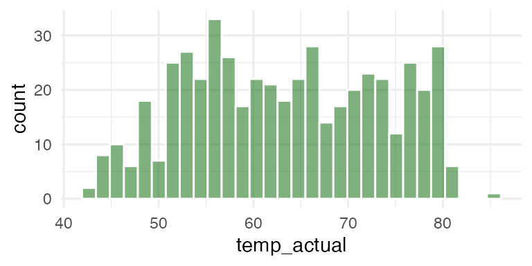
Boxplot
One quantitative variable:
gf_boxplot(~temp_actual, data = bikes, fill = "darkgreen")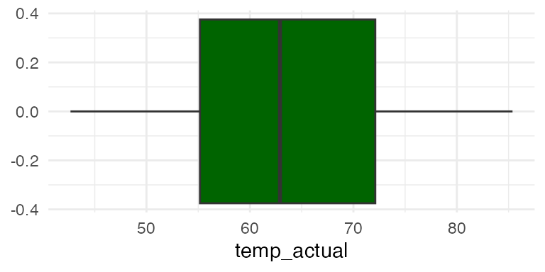
One quantitative variable separated and colored by a categorical variable:
gf_boxplot(temp_actual ~ weekend, data = bikes, fill = ~weekend)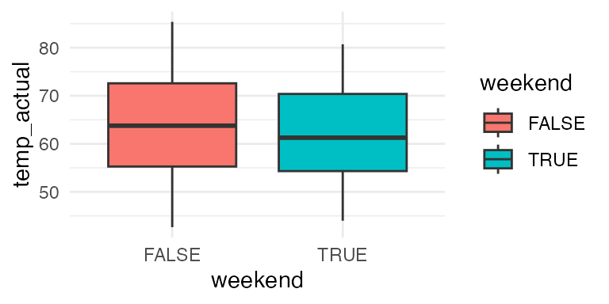
Scatterplot
gf_point(rides ~ temp_actual, data = bikes)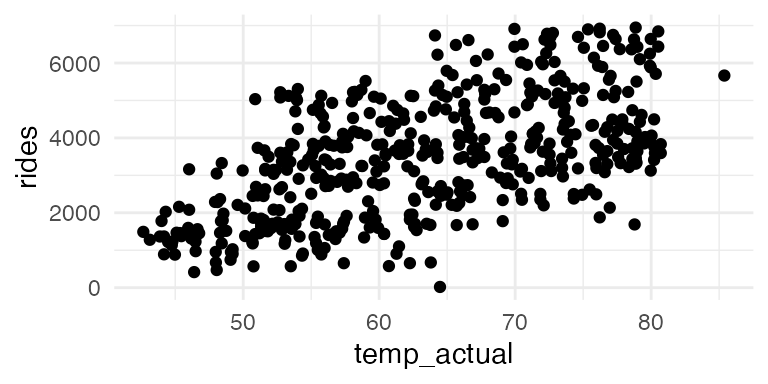
Colored by a 3rd variable:
gf_point(rides ~ temp_actual, color = ~weekend, data = bikes)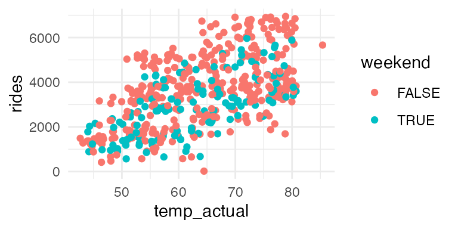
QQ plot
gf_qq(~temp_actual, data = bikes) |>
gf_qqline()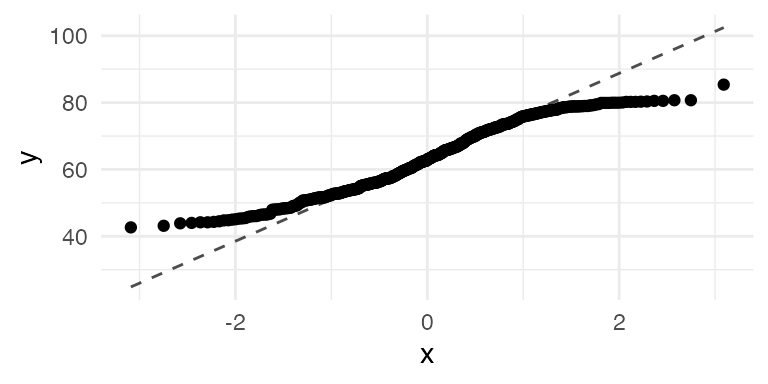
Numeric Summaries
Syntax is data$variable_name.
Mean:
mean(bikes$temp_actual)[1] 63.32782Standard deviation:
sd(bikes$temp_actual)[1] 10.17069Median:
median(bikes$temp_actual)[1] 62.90375Variance
var(bikes$temp_actual)[1] 103.443Correlation (2 quantitative variables)
cor(bikes$temp_actual, bikes$temp_feel)[1] 0.9823728SLR
Fitting the model
To get the slope and intercept, use lm()
lm(rides ~ temp_actual, data = bikes)
Call:
lm(formula = rides ~ temp_actual, data = bikes)
Coefficients:
(Intercept) temp_actual
-2168.77 89.23 To get the summary, first save the lm with <- and then call summary
bikes_slr <- lm(rides ~ temp_actual, data = bikes)
summary(bikes_slr)
Call:
lm(formula = rides ~ temp_actual, data = bikes)
Residuals:
Min 1Q Median 3Q Max
-3564.3 -1009.3 -116.4 959.1 3184.6
Coefficients:
Estimate Std. Error t value Pr(>|t|)
(Intercept) -2168.77 363.64 -5.964 4.67e-09 ***
temp_actual 89.23 5.67 15.739 < 2e-16 ***
---
Signif. codes: 0 '***' 0.001 '**' 0.01 '*' 0.05 '.' 0.1 ' ' 1
Residual standard error: 1288 on 498 degrees of freedom
Multiple R-squared: 0.3322, Adjusted R-squared: 0.3308
F-statistic: 247.7 on 1 and 498 DF, p-value: < 2.2e-16If you want to access specific elements of the summary (like \(R^2\) or \(\sigma\)) you can use:
summary(bikes_slr)$sigma[1] 1288.134summary(bikes_slr)$r.squared[1] 0.3321778Plotting
Overlay a regression line with a pipe (|>) and gf_lm()
gf_point(rides ~ temp_actual, data = bikes) |>
gf_lm()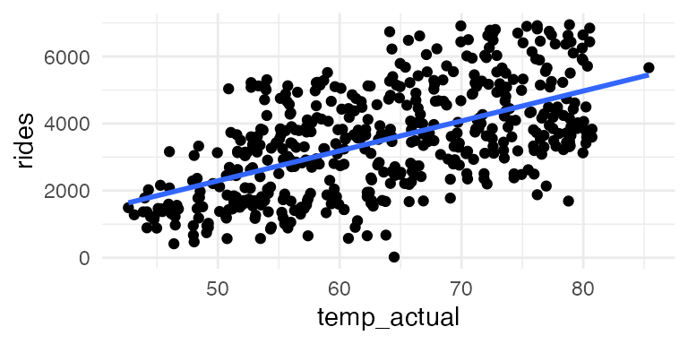
You can also specify a prediction or confidence interval in gf_lm:
gf_point(rides ~ temp_actual, data = bikes) |>
gf_lm(interval = "confidence", level = .9)gf_point(rides ~ temp_actual, data = bikes) |>
gf_lm(interval = "confidence", level = .9) |>
gf_lm(interval = "prediction", level = .9, fill = "goldenrod")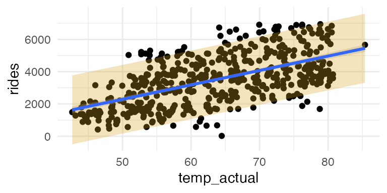
Predictions
Use predict() to get a point estimate for \(\hat{y}_i\), a confidence interval or prediction interval.
predict(bikes_slr, newdata = data.frame(temp_actual = 75)) 1
4523.768 predict(bikes_slr, newdata = data.frame(temp_actual = 75),
interval = "confidence",
level = .9) fit lwr upr
1 4523.768 4379.182 4668.354predict(bikes_slr, newdata = data.frame(temp_actual = 75),
interval = "prediction",
level = .9) fit lwr upr
1 4523.768 2396.109 6651.427Inference
Confidence intervals:
confint(bikes_slr) 2.5 % 97.5 %
(Intercept) -2883.2350 -1454.3122
temp_actual 78.0944 100.3734Nice version of regression table:
library(broom)
tidy(bikes_slr)# A tibble: 2 × 5
term estimate std.error statistic p.value
<chr> <dbl> <dbl> <dbl> <dbl>
1 (Intercept) -2169. 364. -5.96 4.67e- 9
2 temp_actual 89.2 5.67 15.7 1.35e-45Conditions
Use augment to create an augmented dataset with residuals and fitted values for all data points:
bikes_slr_aug <- augment(bikes_slr)
head(bikes_slr_aug)# A tibble: 6 × 8
rides temp_actual .fitted .resid .hat .sigma .cooksd .std.resid
<int> <dbl> <dbl> <dbl> <dbl> <dbl> <dbl> <dbl>
1 654 57.4 2953. -2299. 0.00268 1285. 0.00429 -1.79
2 1229 46.5 1980. -751. 0.00749 1289. 0.00129 -0.585
3 1454 46.8 2004. -550. 0.00732 1289. 0.000676 -0.428
4 1518 48.7 2181. -663. 0.00612 1289. 0.000821 -0.517
5 1362 46.5 1981. -619. 0.00748 1289. 0.000877 -0.482
6 891 44.2 1773. -882. 0.00911 1289. 0.00218 -0.688You can then make a histogram or scatterplot with the usual {ggformula} tools:
gf_point(.resid ~ .fitted, data = bikes_slr_aug)
gf_histogram(~.resid , data = bikes_slr_aug, col = "white")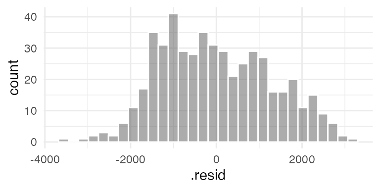
gf_qq(~.resid , data = bikes_slr_aug) |>
gf_qqline()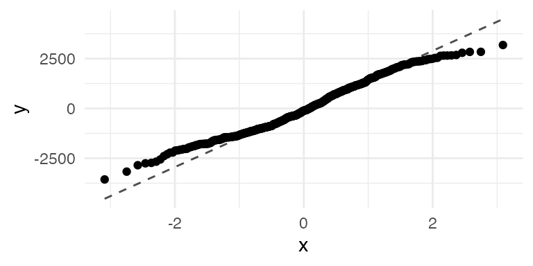
Alternatively, you can make a panel of residual plots with the resid_panel shortcut function in {ggResidpanel} package:
library(ggResidpanel)
resid_panel(bikes_slr)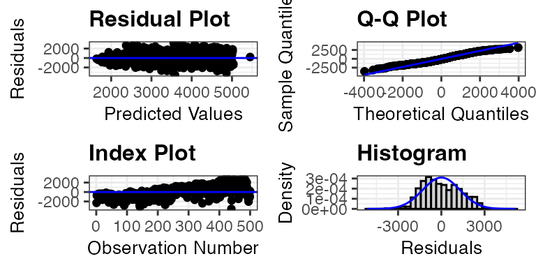
(If it takes a long time, try using standardized residuals instead)
resid_panel(bikes_slr, type = "standardized")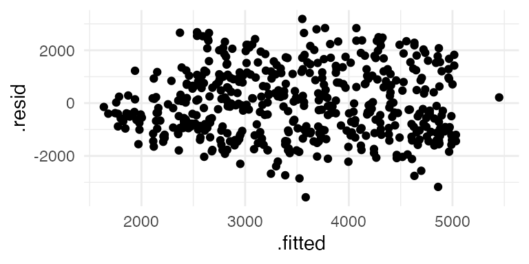
MLR
Other R
Finding \(t^*\)
Corresponds to the 2.5th percentile of a \(t_{498}\) distribution:
qt(.025, df = 498)[1] -1.964739